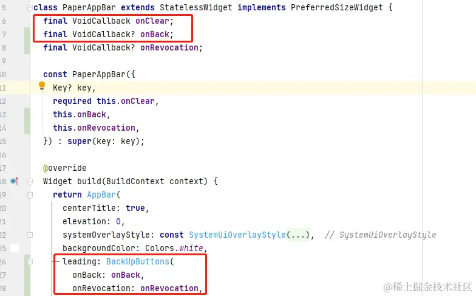
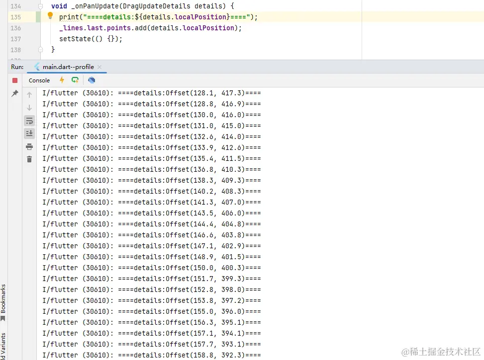

- 01 前言-教程内容导读.md.html
- 02 Flutter 开发环境的搭建.md.html
- 03 新手村基础 Dart 语法 (上).md.html
- 04 新手村基础 Dart 语法 (下).md.html
- 05 Flutter 计数器项目解读.md.html
- 06 猜数字界面交互与需求分析.md.html
- 07 使用组件构建静态界面.md.html
- 08 状态数据与界面更新.md.html
- 09 校验结果与提示信息.md.html
- 10 动画使用与状态周期.md.html
- 11 猜数字整理与总结.md.html
- 12 电子木鱼界面交互与需求分析.md.html
- 13 电子木鱼静态界面构建.md.html
- 14 计数变化与音效播放.md.html
- 15 弹出选项与切换状态.md.html
- 16 用滑动列表展示记录.md.html
- 17 电子木鱼整理与总结.md.html
- 18 白板绘制界面交互与需求分析.md.html
- 19 认识自定义绘制组件.md.html
- 20 通过手势在白板上绘制.md.html
- 21 白板画笔的参数设置.md.html
- 22 撤销功能与画板优化.md.html
- 23 应用界面整合.md.html
- 24 数据的持久化存储.md.html
- 25 网络数据的访问.md.html
- 26 教程总结与展望.md.html
- 捐赠
22 撤销功能与画板优化
1. 回退与撤销功能需求分析
如下效果，在头部标题栏的左侧添加两个按钮，分别用于 向前回退 和 撤销回退 ：
- 向前回退: 移除当前线列表中的最后一条线。
- 撤销回退: 向当前线列表中添加上次回退的线。
| 向前回退 | 撤销回退 |
|---|---|
由于需要 "后悔"，所以需要引入一个线列表作为 "后悔药"，也就是收集向前回退过程中被抛弃的线。这里在状态类中添加 _historyLines 列表来维护：
List<Line> _historyLines = [];
另外，在界面构建逻辑中，需要注意按钮可操作性的限制，比如当线列表为空时，无法向前回退：
当界面上有内容时，才允许点击左侧按钮回退。撤销按钮同理，只有回退历史中有元素，才可以操作。
2. 回退与撤销界面构建
首先看一下两个按钮的构建逻辑，这里封装一个 BackUpButtons 组件进行维护。其中有两个可空的回调函数，分别用于处理两个按钮的点击事件。当函数为空时，表示当前按钮不可用，呈灰色状态示意，代码中对应的是 backColor 和 revocationColor 颜色的赋值。
IconButton 默认情况下是 48*48 的尺寸，看起来比较大，可以设置 constraints 参数来修改约束，从而控制尺寸。这里用了 Transform 组件，通过 scale 构造让图标按钮沿 Y 轴镜像，就可以得到与右侧对称的效果。
class BackUpButtons extends StatelessWidget {
final VoidCallback? onBack;
final VoidCallback? onRevocation;
const BackUpButtons({
Key? key,
required this.onBack,
required this.onRevocation,
}) : super(key: key);
@override
Widget build(BuildContext context) {
const BoxConstraints cts = BoxConstraints(minHeight: 32, minWidth: 32);
Color backColor = onBack == null?Colors.grey:Colors.black;
Color revocationColor = onRevocation == null?Colors.grey:Colors.black;
return Center(
child: Wrap(
children: [
Transform.scale(
scaleX: -1,
child: IconButton(
splashRadius: 20,
constraints: cts,
onPressed: onBack,
icon: Icon(Icons.next_plan_outlined,color: backColor),
),
),
IconButton(
splashRadius: 20,
onPressed: onRevocation,
constraints: cts,
icon: Icon(Icons.next_plan_outlined, color: revocationColor),
)
],
),
);
}
}
然后将 BackUpButtons 放在恰当的位置即可，由于两个按钮属于头部标题，而头部标题栏的构建逻辑封装在 PaperAppBar 中。这里有两种思路：
- 将 BackUpButtons 封装在 PaperAppBar 内部，将两个按钮的点击事件继续向上传递。
- 将左侧组件作为插槽位置，通过构造将组件传入到 PaperAppBar 里进行使用。
其实两者本质上没有区别，只是形式上的差异、这里使用前者，这样对于 PaperAppBar 的使用者而言，只需要在意其中的事件，不需要关注标题中构造逻辑。代码如下：

在使用 PaperAppBar 组件时，为 onBack 和 onRevocation 设置回调处理函数。当 _lines 为空，表示不可回退，onBack 设为 null 即可，这样在 BackUpButtons 组件构建时就会将左侧按钮置位灰色，onRevocation 同理。
appBar: PaperAppBar(
onClear: _showClearDialog,
onBack: _lines.isEmpty ? null : _back,
onRevocation: _historyLines.isEmpty ? null : _revocation,
),
3. 状态数据的维护
最后一步就是在 _back 方法中处理回退的逻辑；在 _revocation 中处理撤销的逻辑。在回退方法中移除 _lines 的最后一个元素，然后让 _historyLines 列表添加移除的线，再更新界面即可：
void _back() {
Line line = _lines.removeLast();
_historyLines.add(line);
setState(() {});
}
在撤销回退方法中移除 _historyLines 的最后一个元素，然后让 _lines 列表添加移除的线，再更新界面即可：
void _revocation() {
Line line = _historyLines.removeLast();
_lines.add(line);
setState(() {});
}
到这里， 向前回退和撤销回退的功能就已经实现了，当前代码位置 paper.dart。虽然现在画板操作时看起开没什么问题，但内部是危机四伏的。
4.拖拽更新的频繁触发
如下所示，在拖拽更新的回调 _onPanUpdate 中打印一下日志，会发现它的触发非常频繁。而每触发一次都会像线中添加一个点，就会导致点非常多。

特别是缓慢移动的过程中，会加入很多相近的无用点，不仅占据内存，也会造成绘制的负担。如下所示，右图通过 PointMode.points 模式展示点前的点，可以看出虽然中间点线很短，但非常密集：
| PointMode.polygon | PointMode.points |
|---|---|
我们可以在收集点时优化一下逻辑，根据与前一点的距离决定加不加入改点，这样可以有效降低点的数量，减缓绘制压力。处理逻辑并不复杂，如下所示，只要校验当前点和线的最后一点的距离，是否超过阈值即可。
void _onPanUpdate(DragUpdateDetails details) {
Offset point = details.localPosition;
double distance = (_lines.last.points.last - point).distance;
if (distance > 5) {
_lines.last.points.add(details.localPosition);
setState(() {});
}
}
阈值越大，忽略的点就越多，线条越不精细，相对来说绘制压力也就越低，需要酌情处理。这里用 5 个逻辑像素，在操作体验上没什么影响，也能达到一定的优化效果。下面是缓慢移动过程中添加点集的情况，可以看出已经避免了点过于密集的问题：
| PointMode.polygon | PointMode.points |
|---|---|
5. 本章小结
到这里，白板绘制的基础功能就已经完成了，当前代码位置 paper。还有些值得优化和改进的地方，比如：
- 现在的线是通过点进行连接的折线，可以通过贝塞尔曲线进行拟合，让点之间的连接更加圆滑；
- 可以提供一些基础图形的绘制操作，让绘制更加丰富。
- 现在每次添加点都会将所有的内容绘制一边，随着绘制内容的增加，会带来频繁的复杂绘制。
- 如何存储绘制的信息到本地，这样即使在退出应用后，也可以在下次开启时恢复绘制的内容。
对这些问题的改进，大家可以在今后的路途中通过自己思考和理解，来尝试解决。接下来，我们将对这三个小项目进行整合，放入到一个项目中。
© 2019 - 2023 Liangliang Lee. Powered by gin and hexo-theme-book.